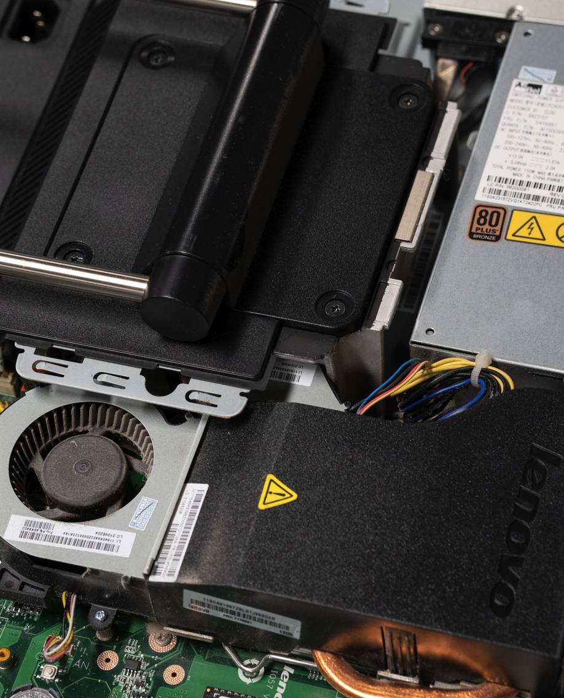

What we accept
Desktops, laptops, monitors, keyboards, mice, and other computer accessories in working or repairable condition.
Corporate ITAD Partner Platform
Secure data destruction, certified environmental reporting, and measurable community impact. Turn retired IT equipment into opportunity.
Mission
Free Geek Toronto reuses electronic waste to provide affordable technology and job training for underrepresented groups facing barriers to employment. Operating under UN Sustainable Development Goals 8, 10, and 12.
Individual Donations
Working and repairable equipment goes back into the community. Corporate bulk donations of uniform laptops remain prioritized for refurbishment efficiency.
Desktops, laptops, monitors, keyboards, mice, and other computer accessories in working or repairable condition.
Submit a donation inquiry. You'll receive drop-off details and next steps for your items.
Your donation helps provide affordable technology and supports job training for underrepresented groups in Toronto.
ITAD
Pragmatic, secure disposition with measurable environmental and social outcomes.
Secure data destruction using trusted open-source tools like DBAN and ShredOS, batch-automated by trained volunteers.
Environmental impact certificates and CSR documentation to meet sustainability goals and compliance needs.
Standard fees for certified wiping and pickup. Fees are fully waived for high-yield, uniform laptop fleets.
Retired equipment directly supports affordable technology access and job training in Toronto.
Partners
Become a Free Geek Toronto ITAD partner to meet sustainability goals, streamline secure disposal, and extend your impact in the community.

Get started
Built for Toronto SMBs looking for a certified, community-aligned ITAD partner.
Data security, pricing model, and process details.
Benefits, recognition, and the partner intake form.
Estimate e-waste diverted, devices refurbished, CO₂ saved, and training hours.
See partners and join the network.